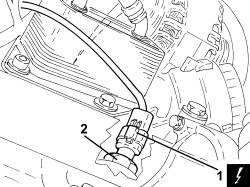
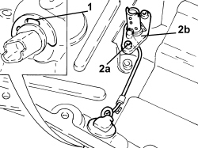
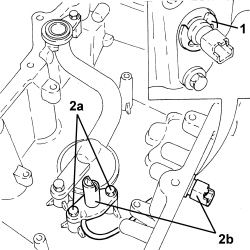

1084A40 ENGINE OIL LEVEL SENSOR - R + R
- Path
- Procedures > 10 ENGINE > 1084 ENGINE LUBRICATION > 1084A INDICATORS/CHECK DEVICES > 1084A40 ENGINE OIL LEVEL SENSOR - R + R
- Kind
- repair procedure (removal / refitting; the operation number is the code)
- Applies to
- engines: 1.9 JTS, 2.2 JTS, 3.2 JTS, 1.9 JTD 8V, 1.9 JTD 16V, 2.4 JTD 20V; all production periods
- Interactive page
- https://sloeber94.github.io/elrnDB/#/939010646
Applies to: engines: 1.9 JTD 8V, 1.9 JTD 16V, 2.4 JTD 20V; all production periods
 Removing
Removing
 Refitting
Refitting- Position the vehicle on a lift.
- Make sure that the ignition key is in the OFF position, then disconnect the battery terminal (-).
Description | Connector | |
|---|---|---|
- | Battery |
Op. 7055B54 UNDER ENGINE PROTECTION/GUARD - R.R.
1. Disconnect the electrical connection for the engine oil level sensor.
Description | Connector | |
|---|---|---|
1 | Engine oil level sensor |
2. Undo and remove the engine oil level sensor.

Applies to: engines: 1.9 JTD 8V, 1.9 JTD 16V, 2.4 JTD 20V; all production periods
Refitting
Removing- Place the engine oil level sensor in its housing and tighten it to the recommended torque.
Component | Fastening | dia | Value (daNm) | Validity |
|---|---|---|---|---|
Engine oil level sensor | - | M12 | (crankcase sump side) 2.3 - 2.8 | 1.9 JTD 8V 1.9 JTD 16V 2.4 JTD 20V |
- Connect the electrical connection to the engine oil level sensor.
Op. 7055B54 UNDER ENGINE PROTECTION/GUARD - R.R.
- Connect the negative battery terminal.
- Remove the vehicle from the lift.
Applies to: engines: 1.9 JTS, 2.2 JTS; all production periods
Removing
RefittingOp. 1084A16 OIL DIPSTICK PIPE - R.R
Op. 4450B04 RIGHT FRONT WHEEL - R.R
Op. 7055B66 ENGINE COMPARTMENT DUST COVER IN RIGHT FRONT WHEEL ARCH - R.R.
Op. 1092C26 BELT FROM AIR CONDITIONER COMPRESSOR DRIVING POWER STEERING PUMP - R + R
Op. 1092G10 SINGLE ENGINE BELT - R.R
Op. 1020A20 CRANKCASE OIL SUMP - R.R CLEAN SURFACES FOR SEALANT APPLICATION
1. Remove the clip securing the oil level sensor connector to the sump.
2. Undo the bolts (2a) and remove the engine oil level sensor (2b).

Applies to: engines: 1.9 JTS, 2.2 JTS; all production periods
Refitting
Removing- Place the engine oil level sensor in its housing and tighten the bolts to the recommended torque.
Component | Fastening | dia | Value (daNm) | Validity |
|---|---|---|---|---|
Engine oil level sensor | Bolt | M12 | 0.8 ÷ 1.2 | 1.9 JTS 2.2 JTS |
- Place the engine oil level sensor connector fastening clip in its housing.
Applies to: engines: 3.2 JTS; all production periods
Removing
RefittingOp. 1020A46 CRANKCASE OIL SUMP PARTITION - R.R. WITH CRANKCASE SUMP REMOVED
1. Remove the safety clip for the electrical connection for the engine oil level sensor.
2. Undo the bolts (2a) and remove the engine oil level sensor (2b) complete with electrical wiring.

Applies to: engines: 3.2 JTS; all production periods
Refitting
Removing- Fit the engine oil level sensor complete with electrical wiring in place and secure it using the bolts.
- Fasten the electrical connection for the engine oil level sensor using the safety clip.
Op. 1020A46 CRANKCASE OIL SUMP PARTITION - R.R. WITH CRANKCASE SUMP REMOVED
Topics linked from this page (10)
- 1020A20 CRANKCASE OIL SUMP - R.R CLEAN SURFACES FOR SEALANT APPLICATION
- 1020A46 CRANKCASE OIL SUMP PARTITION - R.R. WITH CRANKCASE SUMP REMOVED
- 1084A16 OIL DIPSTICK PIPE - R.R
- 1092C26 BELT FROM AIR CONDITIONER COMPRESSOR DRIVING POWER STEERING PUMP - R + R
- 1092G10 SINGLE ENGINE BELT - R.R
- 4450B04 RIGHT FRONT WHEEL - R.R
- 7055B54 UNDER ENGINE PROTECTION/GUARD - R.R.
- 7055B66 ENGINE COMPARTMENT DUST COVER IN RIGHT FRONT WHEEL ARCH - R.R.
- A001 BATTERY
- K032 ENGINE OIL LEVEL SENSOR
Topics that link to this page (5)
- K030 MINIMUM ENGINE OIL PRESSURE WARNING LIGHT NOT WORKING
- K047 MINIMUM ENGINE OIL PRESSURE WARNING LIGHT ON CONSTANTLY
- 1004E20 ENGINE - DISMANTLE AND REASSEMBLE FOLLOWING OPERATION 1004E10 - WASH AND CHECK DISMANTLED PARTS - REFIT CYLINDER HEAD AND OIL SUMP - DOES NOT INCLUDE REPAIRS TO CYLINDER HEAD AND AUXILIARY UNIT
- E4010 INSTRUMENT PANEL - WIRING DIAGRAM
- E4010 INSTRUMENT PANEL - COMPONENT LOCATION